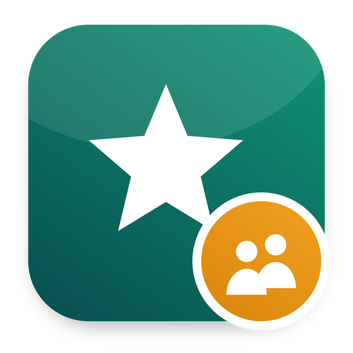

HR Appraisals: 360 Feedback
Peers, direct reports and others answer a survey about the employee; the employee reads the combined answers without the names
PeersDirect reportsSurveysAnonymous summary
Part of Odoo Mates HR · Odoo 20 Community and Enterprise
Ask the right people
The manager picks peers, reports or others; each gets their own link
Answers combined
Averages, counts and texts, without the order of the reviewers
Names stay private
The employee reads the summary from three answers; the manager reads who said what
FeaturesWhat it does
- ✓ Ask for 360 Feedback on an appraisal, for its manager and HR: choose how the reviewers work with the employee (manager, peer, direct report or other), pick them (the other reports of the manager are suggested as peers) and send. Each reviewer gets their own link to the survey by email.
- ✓ A 360 Feedback survey is installed: three scales from 1 to 5 (quality of the work, working together, communication) and two open questions. Change it, or pick any other survey when asking.
- ✓ The 360 Answers button shows who was asked and who answered.
- ✓ The 360 Feedback tab of the appraisal combines the answers: the average of each scale, the count of each choice and the texts, sorted so that their order does not follow the reviewers.
- ✓ The employee reads the combined answers once the appraisal is done and at least three people answered, and never the names. The manager and HR also read who answered what. This holds through the API too: the employee cannot read the requests.
SetupConfiguration
Install it from Employees > Configuration > Settings > Appraisals > 360 Feedback. Change the questions in Surveys > 360 Feedback. The answers are survey answers: the users of the Surveys application read them there with the names. Give the Surveys rights to HR only.
UseHow it works
- 1. On an appraisal under way, click Ask for 360 Feedback, choose the reviewers and send.
- 2. The reviewers answer from the email.
- 3. The manager reads the answers in the 360 Feedback tab; the employee reads the combined answers once the appraisal is done.
EditionsCommunity and Enterprise
Works with Odoo 20 Community and Odoo 20 Enterprise. On Enterprise, it cannot be installed together with the Enterprise Appraisals app: both define the same records. Use one or the other.
InstallDependencies
om_hr_appraisal, survey.
Odoo Mates HR
The HR suite of Odoo Mates for Odoo 20: every module installs on its own, the links between them are bridges.
Support: odoomates@gmail.com